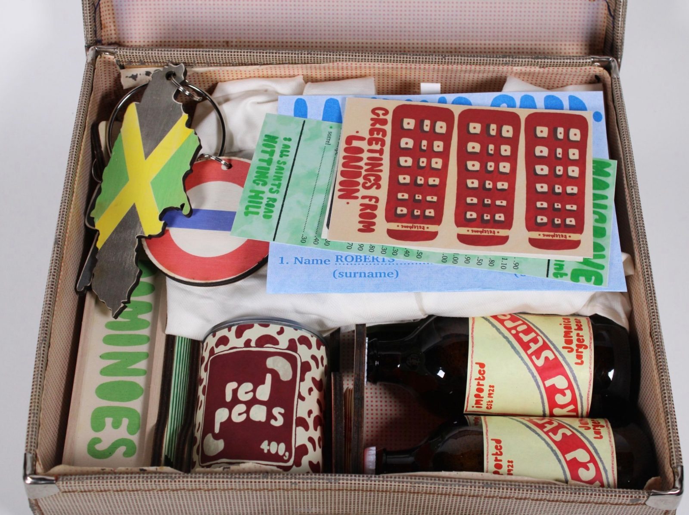
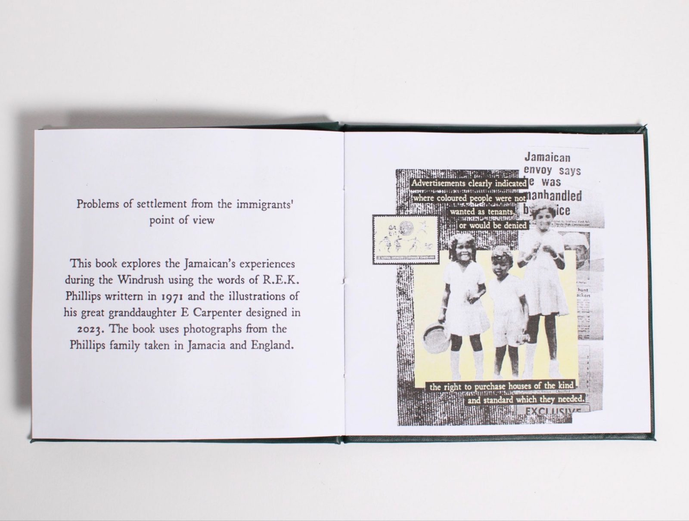
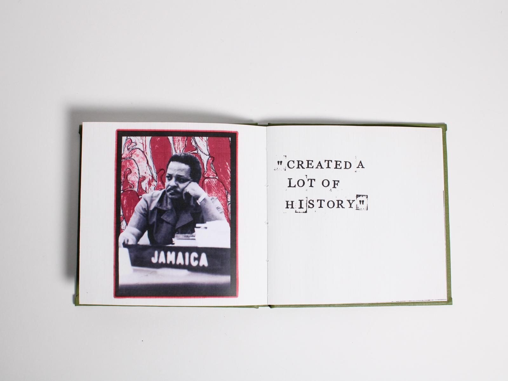
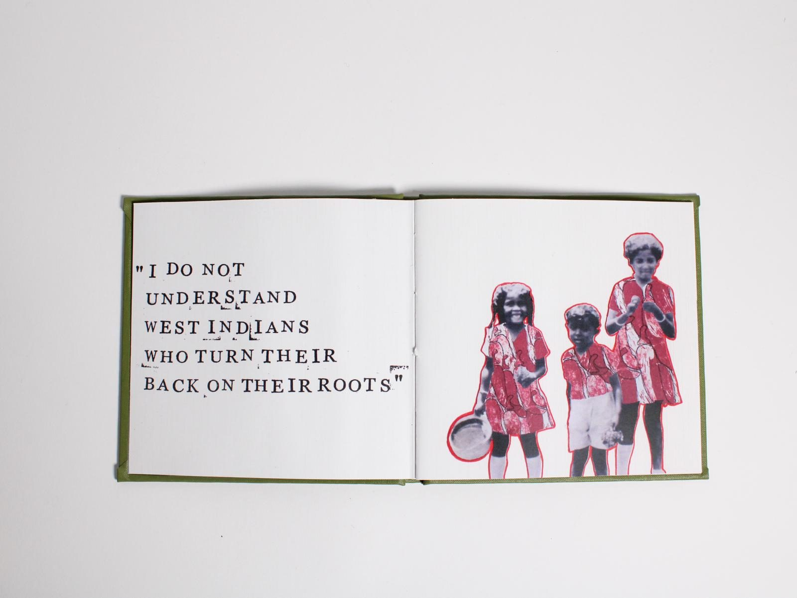
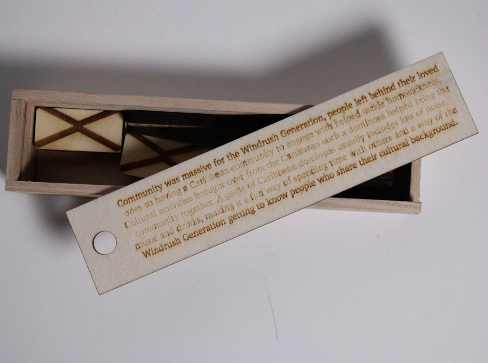
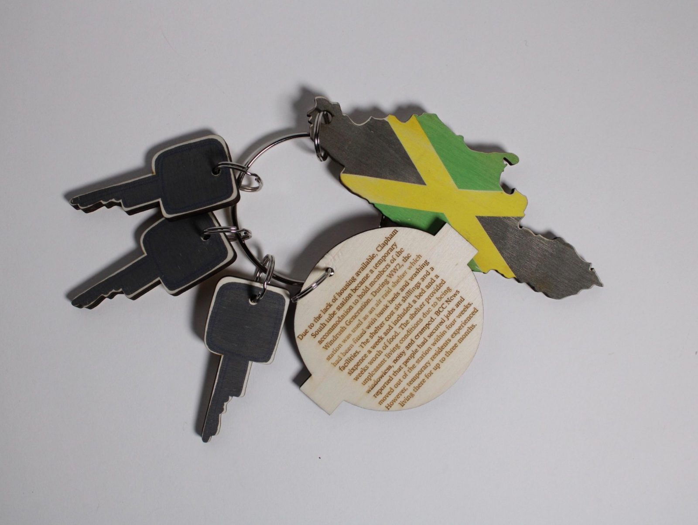
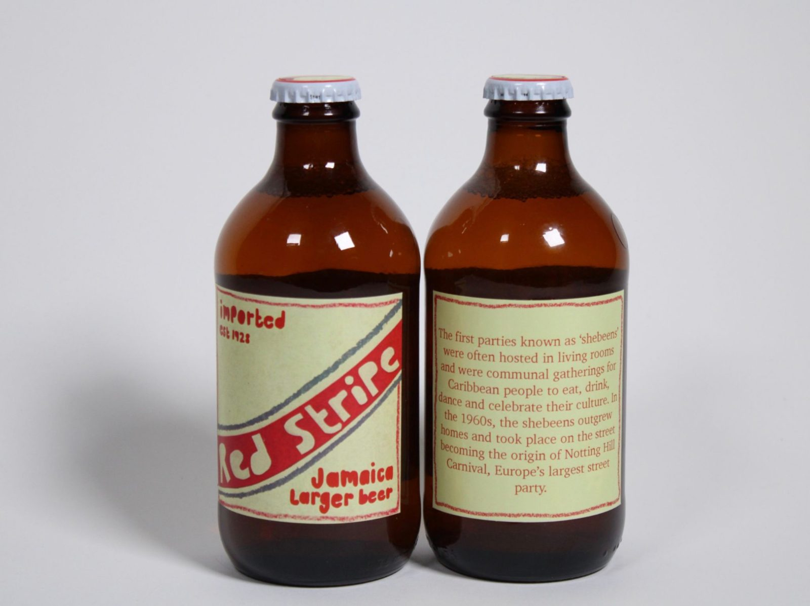
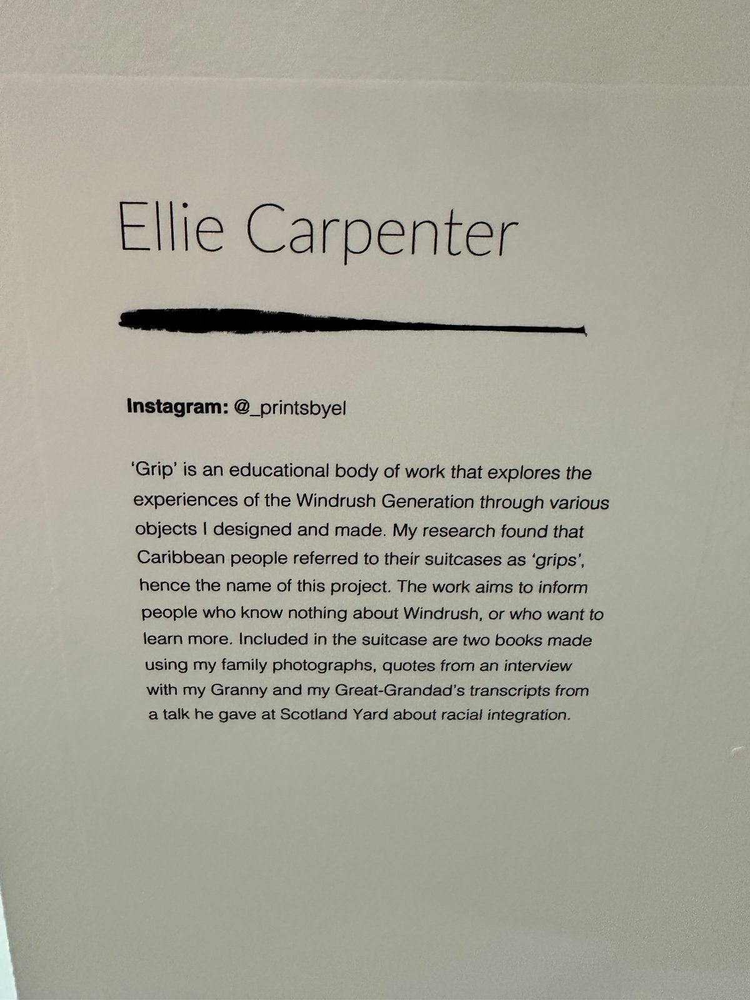
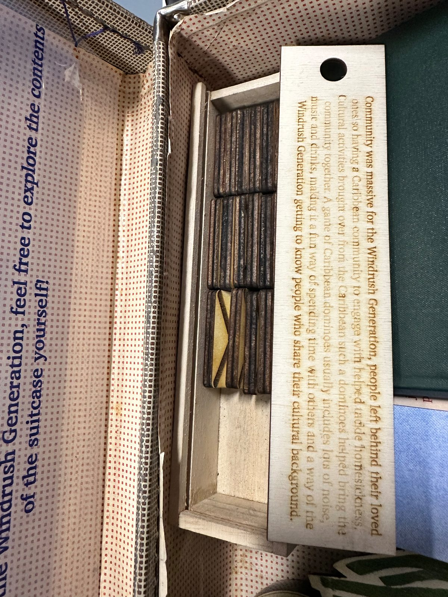

Grip
A suitcase you are allowed to open — and an education in the Windrush Generation waiting inside it.

The statement
“Grip’ is an educational body of work that explores the experiences of the Windrush Generation through various objects I designed and made. My research found that Caribbean people referred to their suitcases as ‘grips’, hence the name of this project. The work aims to inform people who know nothing about Windrush, or who want to learn more. Included in the suitcase are two books made using my family photographs, quotes from an interview with my Granny and my Great-Grandad’s transcripts from a talk he gave at Scotland Yard about racial integration.”
Ellie Carpenter — exhibition text
The brief I set myself
The introduction printed inside the lid of the suitcase is where the project starts, and it is the first thing anyone reads:
Printed inside the lid of the grip“HMT Empire Windrush was a ship that arrived at the Port of Tilbury on the 21st June 1948, carrying 1027 passengers on a voyage from Jamaica to London. The ship carried 492 Caribbean migrants, many of them veterans of the Second World War, who were invited by the British Government to rebuild the country after WW2… Known as the Windrush Generation, Caribbean people continued to immigrate to the UK between 1948 and 1971 and settled across the country, with the largest areas of Caribbean settlement being in Brixton, South London. The Windrush Generation has massively influenced British culture in terms of music, food, clothing and continues to to this day.”
That history is not always taught, and a lot of people meet the word ‘Windrush’ only through a scandal rather than through the lives behind it.
I wanted to make something for two audiences at once: people who know nothing at all about Windrush, and people who already know some of it and want to go further. That ruled out anything that required prior knowledge to get started, and it ruled out anything that lectured.
- Make the history approachable without flattening it.
- Put a real family at the centre, not a set of statistics.
- Design for touch — reading, handling, unpacking.
- Write every piece of interpretation so a newcomer is never left behind.
Why a grip
The research gave me the form. Caribbean people called their suitcases grips — and for people leaving home with what they could carry, a grip held everything. Using one as the container for the project meant the object was already doing the storytelling before anyone read a word: this is what was brought, and this is what was left behind.
The suitcase is vintage, worn, and deliberately not precious. Its lining carries a printed invitation — feel free to explore the contents yourself — because the whole piece falls apart if people think they are meant to look and not touch.
Inside the grip — 01
Two books, made from my own family
The books are the heart of it. Both are hand-bound in cloth and built from Phillips family photographs taken in Jamaica and England, set against testimony from my own family: an interview with my Granny, and the words of my great-grandfather, R.E.K. Phillips, written in 1971 — his transcripts from a talk he gave at Scotland Yard about racial integration.
The credit page states it plainly: the book explores the Jamaican experience of the Windrush “using the words of R.E.K. Phillips written in 1971 and the illustrations of his great granddaughter E Carpenter”. His writing is the text; mine is the design around it. Fifty-two years separate the two halves.
The photographs are printed as duotones — black and a screen-printed red — so archive images and family snapshots sit in the same visual register. The quotations face them in typewriter type, set unevenly on purpose: slightly knocked, slightly over-inked, the way a transcript feels rather than the way a caption looks.



From my Great-Grandad’s transcript“Created a lot of history”
What the binding had to do
Both books are small enough to hold in one hand and sewn so they open flat. That mattered more than it sounds: in an exhibition, a book that snaps shut is a book nobody finishes. Cloth boards, exposed sewing, no dust jackets to get in the way.
Inside the grip — 02
Objects that carry the research
Everything else in the suitcase is an object I designed and made, each one standing for a part of the culture that travelled with people: music, food, fashion, language and community. Each object comes with a laser-engraved wooden tag holding the piece of research it belongs to, so the writing is attached to the thing rather than exiled to a wall panel.



Dominoes, and why they are here
The domino set is the object people reach for first, so it carries the passage about community — engraved on its tag:
Engraved tag — the domino set“Community was massive for the Windrush Generation, people left behind their loved ones so having a Caribbean community to engage with helped tackle homesickness. Cultural activities brought over from the Caribbean such as dominoes helped bring the community together. A game of Caribbean dominoes usually includes lots of noise, music and drinks, making it a fun way of spending time with others and a way of the Windrush Generation getting to know people who share their cultural background.”
Making the tags in wood rather than card was a decision about permanence and about tone. Engraved text is warm, slightly imperfect, and it survives being handled by a few hundred people over a degree show — which printed labels do not.
The show
Made to be opened
Grip was shown at the Leeds Arts University degree show in 2024, laid out so the suitcase was the first thing you met and the instruction to open it was unmissable. The identity for the piece is deliberately quiet — a light geometric sans, a single inked brush stroke, black on off-white stock — so nothing competes with the photographs and the testimony.


Looking back
Grip taught me the importance of using design to educate — inclusive design, storytelling, and preserving history. I’m grateful to have had the opportunity to explore such a significant topic, and it remains one of my favourite projects from my degree.
It also set the direction for what I want to do next: work with a reason to exist, made for people who were not already in the room.
Credits
- Words
- R.E.K. Phillips, written 1971
- Interview
- My Granny
- Photographs
- The Phillips family, taken in Jamaica and England
- Design & making
- Ellie Carpenter